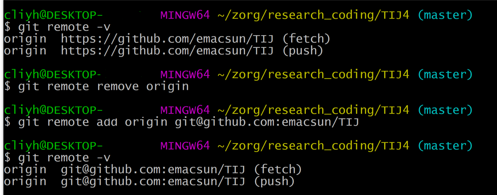

使用 github 保存本地仓库
github 是一个比较理想的 git 仓库托管地，至少我的学习笔记，平常学习的代码以及个人博客都托管到了 github 上，随时随地都可以访问得到。本文以托管我的 Emacs(当然我使用 spacemacs)配置为例，记录如何使用 github 托管本地仓库。
1 首先把 .spacemacs 换成 .spacemacs.d
2 在 github 上创建一个仓库
3 把本地仓库托管到 github 上去
进入本地文件夹 .spacemacs.d ,执行:
1. git init // 初始化本地 git 环境 2. git config --global user.name yourname //配置用户名，如果已经做过就可以忽略 3. git config --global user.email youremail //配置 Email 4. git add . //添加新文件 5. git commit -m "inital version" //初始版本提交 6. git remote add origin https://github.com/emacsun/.spacemacs.d //添加远程版本库 7. git push -u origin master //将本地 master 分支提交到远程分支
如果第一次执行第 7 步的时候，报错说：提交失败，因为远程仓库包含您本地尚不存在的提交，就把第 7 步换成
git push -u origin master -f
去强行提交，覆盖远程仓库原有的东西(很可能是一个 README.MD 文件)
至此结束，以后每修改一次都执行第 4，第 5 和第 7 步即可。
4 使用 SSH 而不是 https
为什么不用 https 而用 ssh ？
https每次push都要输入账户名和密码，麻烦。ssh更安全，且不需要每次push都输入账户名和密码。并且据说ssh速度更快。
如何创建公钥，并上传到 github 上，请参见这里 ，对于我来说，只需要把上一小节的第 6 步：
6. git remote add origin https://github.com/emacsun/.spacemacs.d //添加远程版本库
换成:
6. git remote add origin git@github.com:emacsun/.spacemacs.d //添加远程版本库
即可。如果事先已经添加了 https 的远程仓库，则需要：
git remote remove origin git remote add origin git@github.com:emacsun/.spacemacs.d //添加远程版本库
如果不确定之前添加的remote仓库是基于 https 还是基于 ssh 的，那么可以使用
git remote -v
来查看。

图 1: remote查看和更改
easy！